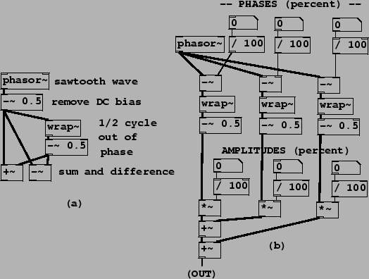

|  |
Example J01.even.odd.pd (Figure 10.12, part a) shows how to combine sawtooth waves in pairs to extract the even and odd harmonics. The resulting waveforms are as shown in Figure 10.3. Example J02.trapezoids.pd (part b of the figure) demonstrates combining three sawtooth waves at arbitrary phases and amplitudes; the resulting classic waveform has up to three jumps and no corners. The three line segments are horizontal as long as the three jumps add to zero; otherwise the segments are sloped to make up for the the unbalanced jumps so that the result repeats from one period to the next.
Example J03.pulse.width.mod.pd (not shown) combines two sawtooth waves, of opposite sign, with slightly different frequencies so that the relative phase changes continuously. Their sum is a rectangle wave whose width varies in time. This is known as pulse width modulation (``PWM").
Example J04.corners.pd (Figure 10.13) shows how to add parabolic waves to make a combined waveform with three corners. Each parabolic wave is computed from a sawtooth wave (ranging from -0.5 to 0.5) by squaring it, multiplying by 0.5, and subtracting the DC component of -1/12, or -0.08333. The patch combines three such parabolic waves with controllable amplitudes and phases. As long as the amplitudes sum to zero, the resulting waveform consists of line segments, whose corners are located according to the three phases and have slope changes according to the three amplitudes.